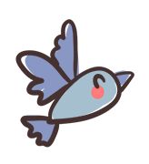

La etapa del desarrollo del niño dentro del preescolar es donde se absorben las características de los ambientes y el conocimiento de las cualidades de los objetos, donde se desarrollan las estructuras neurológicas que facilitan el incremento del lenguaje y el razonamiento, donde la lengua y las manos son instrumentos de la inteligencia, permitiéndoles la búsqueda del conocimiento mediante la relación integral con el medio y la libertad de actuar dando una intensa motivación para su autoconstrucción y la práctica de las relaciones interpersonales.
Aquí los pequeños, aprenderán jugando habilidades básicas para que ingresen a la siguiente etapa escolar con los recursos y herramientas necesarias que faciliten su futuro escolar egresando así con manejo de la lectoescritura y los conceptos necesarios en el área de matemáticas, así como también el manejo del idioma inglés para poder continuar en un sistema bilingüe durante la primaria. En esta etapa iniciamos la enseñanza y el reconocimiento de los límites con amor.

